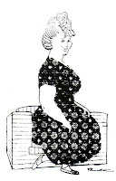
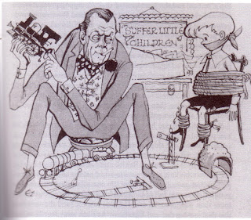
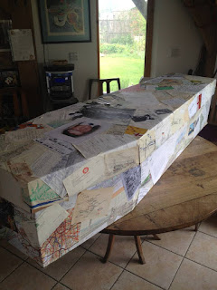

 |
| "Did she think I'd keep a corpse under my sofa?" |
{kind=link}
The e – edition of The Adventures of Margery Allingham, published February 1st 2013, is my third version of a book first published in 1991 as Margery Allingham: a Biography by Julia Thorogood. I'll apologise at once for the confusion of surnames. I married in my early 20s and did the conventional thing of changing my surname to my husband's.
Why? Heaven knows! I can still remember the shocked rush of emotion as I set off for the church all dolled up in my wedding dress and my brother said “Well, goodbye then, Julia Jones.” It was a bit late then to say hey! Whoa! Stop! What am I doing, messing about with my identity?
The marriage didn't last but I had
three extraordinarily lovable children and it felt like solidarity
for us all to keep the same family name. I persisted in this even
when I had a new partner and two more children, with different
surnames. It wasn't until the little ones were about to go to school
and the big ones had virtually left home (AND Peter Duck, symbol of my childhood, was back in my life) that I changed back to
my birth name. I didn't think it would be any big
deal. Julia Jones hadn't ever done anything – beyond go to
school, go to university and get married. Julia Thorogood had run a
bookshop, edited and published books, been a school governor, OFSTED
inspector, WEA tutor-organiser – she was an Author, dammit! By then
(2000) I'd been JT for longer than I'd been JJ. Yet when I did the
swap-back, there she was, Julia Jones, the person that I'd casually
discarded when I went tripping off down the aisle all those aeons
ago. I think she must have been curled up in Peter Duck's
quarterberth, her nose in a book, keeping out of the way of trouble.
I'd wanted to call the biography The
Adventures of Margery Allingham all along. Yes, it was obvious
that Margery didn't have any adventures – no scaling of mountains, plumbing of
depths, salacious affaires, dramatic transgenderings – well, not in
FACT. In fact she stayed quietly in her Essex village, putting on
weight, denying her illnesses and remaining faithful to her errant
husband. But that didn't mean she wasn't having Adventures. They
happened in her head.
Blissfully for the biographer Margery
was perfectly well aware of this and pointed out that her fiction was made entirely by the process of her imagination working
on the events of her daily life. Her “adventures”, she said, were
“mental and moral”. She apologised to an intimate friend for
using, and transforming, an actual incident with a button in the her
1938 novel The Fashion in Shrouds. “I’m sorry
about the button … but my dear sweet ape! Fiction is my art my
profession. For me it is a highly technical business comparable with
dispensing. Personal adventures are always distilled into the drugs
to be used but I would no more dream of putting in something whole or
undigested than I’d think of throwing a whole belladonna root into
the family soup.” What better justification for a literary
biography could there be? Following Margery Allingham though her
ostensibly quiet life has the potential to bring us closer to an
understanding of the transmuting imagination -- how fiction works.
Back in 1991 Julia
Thorogood's editor at Heinemann didn't get that point so the book's
first title was stodgy: Margery Allingham: a
Biography. It
got plenty of praise but never made it into paperback. When Julia
Jones took the plunge and decided to self-publish her own paperback
edition in 2009, she gave her book the title that she'd always
wanted. She also had a new cover, new introduction, a foreword, a
couple of new photos and an Afterword. This Afterword was, arguably,
the single reason that might have persuaded a reader keen on
shock-horror biography to purchase the second edition. It tells of
the unacknowledged child born to Margery's husband Pip Youngman
Carter and lesbian icon Nancy Spain.
This
child was Tom Carter – though he wasn't Tom Carter then – he was
Thomas Laurie Seyler, given the completely untrue parental identities
of Joan Werner Laurie (Nancy Spain's partner) and her former husband
Carlos Seyler (who lived conveniently beyond all contact in
Argentina). This had the advantage of providing Tom with a 'brother',
Nick Laurie, and an 'uncle', Dick Laurie. It was only when both Nancy
and Joan were killed together in a plane crash in 1964 that young Tom, then
aged 11, was told that genetically none of these people were his
relations. At least it explained to the poor lad why he'd always
instinctively preferred Nancy (his birth mother) to his official
mother Joan.
Margery,
Pip, Nancy and Joan had been friends – in the slightly
self-conscious way of professional literary friendships. Nancy's
letters to Margery are especially gushing. (She usually wanted something.) She and Joan attended
Margery nd Pip's annual semi-celeb parties in Essex but didn't bring
the children – though Margery is remembered by others as being
especially welcoming to youngsters. Margery noted the two deaths with
shock in her diary: Pip attended Nancy's memorial service. Tom was
eventually fostered by his prep-school head master and wife. There is
no suggestion anywhere in Pip or Margery's diaries, correspondence or
Wills that they knew of this motherless child's existence. Or Pip's responsibility.
But
does Margery's FICTION tell a different story? That's a tricky one.
Margery's instincts were extraordinarily alert as far as Pip was
concerned. She certainly knew he was sexually unfaithful and a lier
in other respects. Early in 1951, the year before Tom's birth, they came
close to divorce. But that was months before Tom could have been conceived.
When he was unobtrusively born, in August 1952, they were reconciled and about to celebrate their silver
wedding. Hide My Eyes, however, Margery's 1958 novel – and her blackest portrayal of aspects of
their relationship – gives the villain (an acknowledged version of Pip) a
girlfriend who looks remarkably like Nancy.
The
really challenging novel however is The
China Governess (1963).
Pip was home and re-reconciled with Margery and was unusually
involved in the construction of this story. It features the confused
identities of two unacknowledged sons and a father who hadn't known
which one was his. There is a nasty portrayal of the accepted child,
a violent, petty criminal whose learning difficulties are treated
with a visceral distaste that makes repellent reading. Then there is
a final and very beautiful moment when the true father and son
recognise each other but decide to ignore the relationship and go
their separate ways.
 |
| Pip approved this picture of himself. It stopped being funny when I discovered how much Tom loved trains. |
{kind=link}
When
I met Tom Carter I was immediately struck by his physical
relationship to the photographs I had seen of Pip. I also knew he had
suffered from mental illness for most of his life, connected perhaps with
the difficulties of living with high-functioning autism -- perhaps destabilised also by the lies of his mothers. I think
that Margery, of all people, could have understood and sympathised
with the pain Tom suffered from not knowing who he was. The troubled
adolescent boy hauled from step-father to step-father in The
Fashion in Shrouds (1938)
is one of the finest minor characters in her fiction. "I only want to be something definite .. It's my life, you see." His
predicament is not dissimilar to the boys in The
China Governess.
In this later novel public recognition of paternity is finally rejected by the real son
but is essential to the repulsive misfit. His false identity papers
are “all he has.” That flash of understanding is a chilling, redeeming
touch.
Could
Margery, Pip, or both of them have know the truth about Tom's
existence and chosen to ignore it, confessing only via The
China Governess?
Rather like the villain in Hide My Eyes
who leaves evidence so blatant that he must subconsciouly want
to be
caught? Am I hiding my eyes, as biographer, if I say that I still
don't think so? Tom Carter became my friend and I would
never have de-stabilised his understanding of himself by speculating
that his father could have known of his existence all along, and chose never to recognise him and to leave him
to be fostered by a school teacher when his mothers were killed. I would also de-stabilise my own understanding of Margery
if I accepted she had been a conscious accomplice in such behaviour.
In the introduction to the second edition, however, I took as my
remit Margery's demand that a journalist (or biographer) should “be very honnest”
- even when she had found Margery in the midst of a mental breakdown.
I'm giving it my best shot.
Tom
died last year. His brother and uncle -- the non-related family who
stuck with him throughout his life -- put the names of both sets of
'parents' on his coffin. For this e-edition I have altered the
Afterword to recognise the fact of Tom's death but my questioning of
the fiction which may have been spun around his life in The
China Governess creeps
in only as far as a footnote. I don't think I have
sufficient evidence for any jury to convict either Pip or Margery of deliberate child-denial. Unacknowledged children
and confusion of birth identities are the stuff of story after all.
Margery's father Herbert spent his working life repeating such archetypal tales.
What I do think, finally, is that fiction can know things that fact
won't recognise and there's a huge amount of truth and meaning in
coincidence. And I know that's what Margery Allingham believed.
Ladies and gentlemen, I rest my case.
 |
| Tom Carter's coffin |
{kind=link}